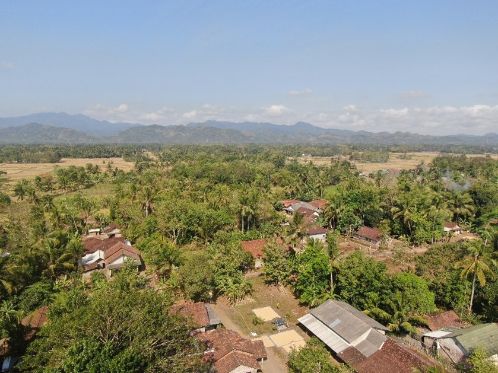

Kabupaten Purworejo
Kabupaten Purworejo merupakan salah satu Kabupten yang berada di Provinsi Jawa Tengah. Kabupaten Purworejo berada pada sisi selatan Pulau Jawa dengan jarak bentangan utara ke selatan yakni 83,7 km dan jarak bentangan timur ke barat adalah 99,8 km. Kabupaten Purworejo secara astronomis terletak
Pada posisi 109º 47’ 28” – 110º08’ 20” Bujur Timur (BT) dan 7º 32’ – 7º 54’ Lintang Selatan (LS)..Kabupaten Purworejo berbatasan dengan Kabupaten Kebumen di sebelah Barat, Kabupaten Magelang dan Kabupaten Wonosobo di sebelah Utara, Kabupaten Kulonprogo disebelah Timur, dan Samudera Indonesia di sebelah Selatan

Calender Of Event Purworejo Januari 2024
Calender Of Event Purworejo November
Calender Of Event Purworejo Oktober
Calender Of Event Purworejo September
Calender Of Event Purworejo Desember
Calender Of Event Purworejo November
Calender Of Event Purworejo Oktober
Calender Of Event Purworejo September
Calender Of Event Purworejo Desember
Calender Of Event Purworejo November
Calender Of Event Purworejo Oktober
Calender Of Event Purworejo Desember
Calender Of Event Purworejo November
Calender Of Event Purworejo November
Calender Of Event Purworejo Oktober
Calender Of Event Purworejo Oktober
Calender Of Event Purworejo Oktober
Calender Of Event Purworejo Oktober
Calender Event
Di sini, Anda akan menemukan informasi terkini seputar berbagai acara dan kegiatan yang diselenggarakan di wilayah Purworejo. Dari festival budaya hingga olahraga.
Jelajahi kalender kami untuk mengetahui jadwal lengkap acara-acara menarik yang akan berlangsung
Kependudukan
Dinas Kependudukan dan Pencatatan Sipil Kabupaten Purworejo mencatat bahwa padat ahun 2022 jumlah penduduk Kabupaten Purworejo sebanyak 804.335 jiwa, sedangkan tahun 2023 mengalami kenaikan menjadi 806.374 jiwa.
Kabupaten Purworejo yang terdiri atas 16 Kecamatan memiliki jumlah dan persebaran penduduk yang berbeda-beda, dimana jumlah penduduk terbanyak pada tahun 2023 berada di Kecamatan Purworejo dengan jumlah penduduk mencapai 88,918 jiwa atau sebanyak 11% dari total jumlah penduduk berada di Kecamatan Purworejo.
"Tabel kepadatan penduduk tersebut diperoleh dari data Dinas Kependudukan dan Pencacatan Sipil Kabupaten Purworejo" by Disdukcapil Purworejo
Padatnya penduduk pada Kecamatan Purworejo dan Kecamatan Kutoarjo disebabkan oleh ebberapa faktor, seperti fungsi wilayah yang berperan sebagai pusat ekonomi dan pemerintahan, banyaknya faslitas umum, kegiatan pendidikan, dan lain sebagainya yang membuat banyak warganya memilih untuk tinggal di Kecamatan tersebut karena dinilai lebih efektif dalam beraktivitas maupun bermobilitas.
Kepadatan penduduk terendah berada di Kecamatan Kaligesing dengan kepadatan 438 jiwa per kilometer persegi.
Penggunaan Lahan
Penggunaan lahan yang ada di Kabupaten Purworejo meliputi hutan tanaman, lahan terbuka, permukiman, pertanian lahan kering, pertanian lahan kering campur, sawah, semak belukar, tambak, dan tubuh air.
Penggunaan lahan yang paling banyak dimanfaatkan adalah pertanian lahan kering dengan persentase lebih dari 42% dari total luas wilayah Kabupaten Purworejo dan berada pada sisi utara.
Analisis Penggunaan lahan dilakukan dengan menggunakan data SRTM Pulau Jawa 30 m, serta dilakukan analisis wilayah dengan berdasarkan purworejokab.go.id
Penggunaan lahan berupa pertanian lahan kering menjadikan Kabupaten Purworejo memiliki momoditas pangan dan holtikultura berupa palawija dan ubi kayu. Penggunaan lahan sawah menjadi penggunaan lahan terbanyak kedua yang ada di Kabu paten Purworejo.
Penggunaan lahan sawah berada pada sisi selatan Kabupaten Purworejo dengan keadaan relief yang relatif datar. Penggunaan lahan berupa permukiman memiliki total luas wilayah sebanyak 16% dan tersebar di berbagai wilayah mulai dari dataran rendah hingga tinggi, akan tetapi permukiman paling banyak berada pada dataran rendah dan wilayah pesisir
TOPOGRAFI KABUPATEN PURWOREJO
Kabupaten Purworejo memiliki topografi yang sangat bervariasi mulai dari datar / landai hingga sangat curam. Secara umum topografi Kabupaten Purworejo terbagi menjadi dua kategori yaitu kategori dataran rendah dan kategori daerah berbukit.
Daerah dataran rendah adalah dataran dengan kelas kemiringan lereng datar (0-8%) dan landai (8-15%). Daerah dengan topografi datar berada pada daerah selatan hingga tengah dan daerah dengan topografi landai berada sisi lebih utara dan timur serta merupakan bagian dari kaki perbukitan menoreh. Daerah berbukit adalah daerah dengan tingkat kemiringan 15-45%.

Sudut kemiringan lereng diukur sebagai perbandingan ketinggian vertikal terhadap jarak horizontal. Dalam konteks geologi dan topografi, kemiringan lereng adalah faktor penting yang mempengaruhi stabilitas lereng dan dapat berdampak pada kejadian tanah longsor.
Daerah berbukit berada pada sisi utara dan timur yang merupakan bagian dari formasi perbukitan menoreh.
persebaran kemiringan lereng yang ada di Kabupaten Purworejo dengan lima kelas kemiringan lereng yang berbeda mulai dari datar hingga sangat curam. Berdasarkan informasi topografi tersebut secara umum dapat dibedakan menjadi dua kategori yaitu kategori dataran rendah dan kategori daerah berbukit.
IKLIM KABUPATEN PURWOREJO
Purworejo adalah kabupaten yang terletak di Provinsi Jawa Tengah, Indonesia. Secara umum, Purworejo mengalami iklim tropis dengan dua musim utama, yaitu musim hujan dan musim kemarau.
Purworejo adalah kabupaten yang terletak di Provinsi Jawa Tengah, Indonesia. Secara umum, Purworejo mengalami iklim tropis dengan dua musim utama, yaitu musim hujan dan musim kemarau
Metode Inverse Distance Weighted (IDW) merupakan metode deterministik yang sederhana dengan mempertimbangkan titik disekitarnya
Hasil dari interpolasi curah hujan 10 tahun dengan teknik IDW menampilkan gradasi warna biru yang memiliki arti semakin gelap warna nya maka intensitas hujan semakin tinggi. Apabila dilihat dari hasil interpolasi, intensitas hujan tertimggi terjadi di wilayah bagian timur dan utara atau tepatnya berada pada kecamatan Kaligesing, Laono, dan Bruno yang berada di daerah dataran tinggi dengan intesitas hujan mencapai 169.489 - 178.790mm.
Daerah dengan intesitas hujan sedang berada di bagian utara dan berada di Kecamatan Gabang, Bener, dan sebagian Kecamatan Kemiri dengan intensitas hujan mencapai 158.506 - 163.488mm. Sedangkan daerah dengan intensitas hujannya paling sedikit ialah Kecamatan Pituruh dengan intensitas hujan kurang dari 150mm. Wilayah Kabupaten Purworejo bagian selatan berada pada intensitas hujan rendah dengan intensitas hujan antara 147.105 - 158.505mm.